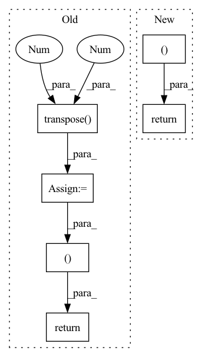

Pattern ID :1207
Before Change
w = w_1 / w_2
out = torch.matmul(w.transpose(1 , 2 ) , encoder_outputs)
return out, w
class DurationPredictor(nn.Module):
Duration Parameter Predictor After Change
attn = w / (torch.sum(w, dim=1).unsqueeze(1) + 1e-8) // [B, L, T]
out = torch.bmm(attn.transpose(1, 2), encoder_outputs)
return out, attn
class DurationPredictor(nn.Module):
Duration Parameter Predictor In pattern: SUPERPATTERN
Frequency: 4
Non-data size: 6
Instances Fragment ID: 3665927
Project Name: keonlee9420/wavegrad2
Commit Name: 523ec241c64ab635218f32d071fd85fbc469e178
Time: 2021-07-13
Author: keonlee9420@gmail.com
File Name: model/modules.py
M Class Name: GaussianUpsampling
N Class Name: GaussianUpsampling
M Method Name: forward(4)
N Method Name: forward(4)
M Parent Class: nn.Module
N Parent Class: nn.Module
M File Name: model/modules.py
N File Name: model/modules.py
M Start Line: 115
M End Line: 135
N Start Line: 120
N End Line: 134
Before Change
kl_loss = -0.5 * torch.sum(1 + log_vars - mus.pow(2) - log_vars.exp())
// Residual Attention Loss
attn_loss = self.guided_loss(attns.transpose(-2 , -1 ) , src_lens_targets, mel_lens_targets)
total_loss = (
mel_loss + duration_loss + beta * kl_loss + attn_loss
)
return (
total_loss,
mel_loss,
duration_loss,
kl_loss,
attn_loss,
beta ,
)
After Change
mel_loss + duration_loss + beta * kl_loss
)
return (
total_loss,
mel_loss,
duration_loss,
kl_loss,
beta ,
)
Fragment ID: 3665926
Project Name: keonlee9420/parallel-tacotron2
Commit Name: 2c2f8c0876192de39c8e6d3c4f579dc68a50a678
Time: 2021-05-25
Author: keonlee9420@gmail.com
File Name: model/loss.py
M Class Name: ParallelTacotron2Loss
N Class Name: ParallelTacotron2Loss
M Method Name: forward(4)
N Method Name: forward(4)
M Parent Class: nn.Module
N Parent Class: nn.Module
M File Name: model/loss.py
N File Name: model/loss.py
M Start Line: 50
M End Line: 91
N Start Line: 48
N End Line: 86
Before Change
// Back to batch first
alignments = torch.stack(alignments).transpose(0, 1)
outputs = torch.stack(outputs).transpose(0, 1).contiguous()
stop_outputs = torch.stack(stop_outputs).transpose(0 , 1 ) .contiguous()
return outputs, alignments, stop_outputs
def is_end_of_frames(output, eps=0.2): /ǖ.2
return (output.data <= eps).all()After Change
alignments = torch.stack(alignments).transpose(0, 1)
outputs = torch.stack(outputs).transpose(0, 1).contiguous()
return outputs, alignments
def is_end_of_frames(output, eps=0.2): /ǖ.2
return (output.data <= eps).all() Fragment ID: 3665922
Project Name: coqui-ai/tts
Commit Name: a925c9c75cdc699336b1c1b012db9b2e08bc23da
Time: 2018-03-22
Author: egolge@mozilla.com
File Name: layers/tacotron.py
M Class Name: Decoder
N Class Name: Decoder
M Method Name: forward(3)
N Method Name: forward(3)
M Parent Class: nn.Module
N Parent Class: nn.Module
M File Name: layers/tacotron.py
N File Name: layers/tacotron.py
M Start Line: 280
M End Line: 359
N Start Line: 346
N End Line: 349
Before Change
preds.append(self.Linear(h))
preds = torch.stack(preds, dim = 1)
if y is not None:
preds_ = torch.transpose( preds, 1 , 2 )
//print(preds.size())
y = y.long()
loss = self.Loss(preds_, torch.squeeze(y))
return preds, loss
return preds
After Change
preds_ = torch.stack(preds_, dim = 1)
if y is not None:
loss/=len(xs)
return preds_, loss
return preds_
Fragment ID: 3665901
Project Name: dido1998/recurrent-independent-mechanisms
Commit Name: d87a800096eaa36730cbabac535eea24973f3799
Time: 2020-02-11
Author: adidolkar123@gmail.com
File Name: networks.py
M Class Name: CopyingModel
N Class Name: CopyingModel
M Method Name: forward(5)
N Method Name: forward(5)
M Parent Class: nn.Module
N Parent Class: nn.Module
M File Name: networks.py
N File Name: networks.py
M Start Line: 255
M End Line: 276
N Start Line: 291
N End Line: 313